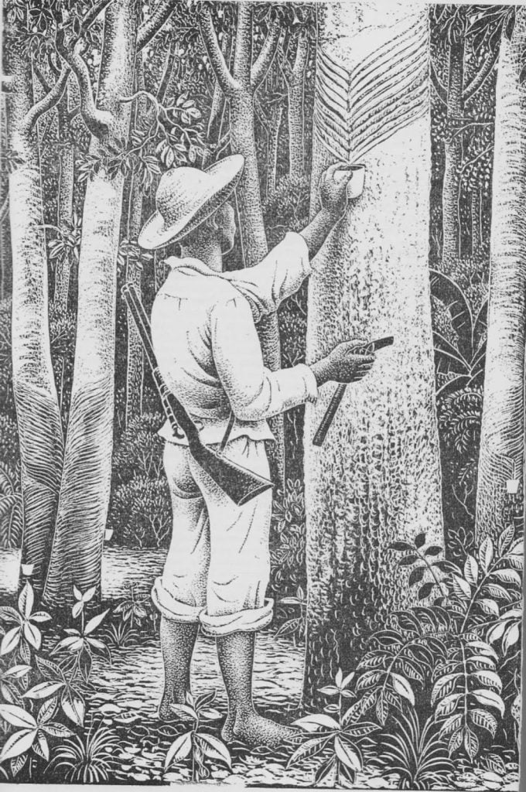

História da Amazônia
Provavelmente você sabe que a Amazônia é a maior floresta tropical do mundo, vital para o equilíbrio do planeta. Mas talvez você não saiba que sua história envolve povos indígenas, biodiversidade única e desafios ambientais. Acompanhe este artigo e descubra fatos incríveis sobre essa imensa floresta. 🌳
Origens e Povos da Amazônia
A história da Amazônia começa muito antes da chegada dos europeus. Por milhares de anos, diversos povos indígenas habitaram essa região, desenvolvendo culturas, línguas e modos de vida totalmente integrados à floresta.
Esses povos utilizavam práticas sustentáveis, como a agricultura de coivara e o manejo dos recursos naturais. Suas técnicas garantiam equilíbrio entre consumo e preservação, mantendo a floresta viva e produtiva.
Exploração, Desafios e Preservação
Com a chegada dos europeus no século XVI, a Amazônia começou a ser explorada por suas riquezas naturais, como madeira, borracha e minérios. Esse período trouxe grandes impactos para as populações nativas e para o meio ambiente.
Ao longo dos séculos, a floresta enfrentou ciclos de exploração econômica, como o famoso Ciclo da Borracha, que atraiu milhares de pessoas para a região em busca de fortuna, deixando marcas culturais e sociais profundas.
Atualmente, a Amazônia vive um dos maiores desafios de sua história: o desmatamento e as mudanças climáticas. Apesar disso, ela continua sendo símbolo de biodiversidade e resistência, com movimentos de preservação ganhando força no mundo inteiro.
Então é isso! Espero que você tenha gostado do nosso artigo com essa curiosidade sobre a Amazônia e sua história.